Otto on the home screen, two directions
Both are rendered from the app itself: the real valley, Otto's real still drawings and the real flame. A widget cannot animate, so these are exactly the pictures it would show at each hour.
Same three moments in each: morning, five days in, not yet meditated · evening, six days, already meditated · night, a few days away, no streak.
1. The app's valley Recommended
- Otto sits on his cushion in the same valley as Home: both ridges, the real flowers in front of and behind him, the haze.
- At night he darkens with the ground, so he is lit for the hour instead of for noon.
- The medium is one continuous scene. His line sits in Home's own speech bubble; the sand panel and the glow bar are gone.
- Only the streak sits on top. The glow percentage is dropped: his drawing already shows it.
Morning
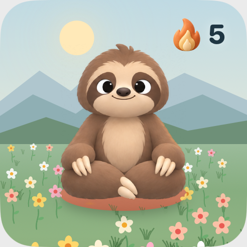
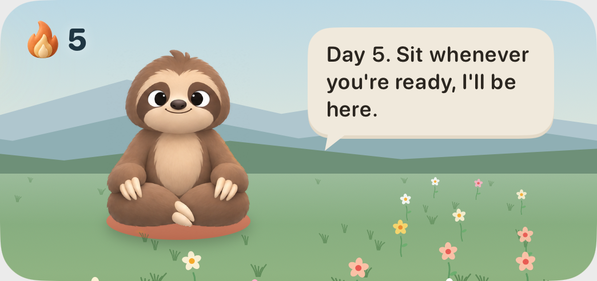
Evening
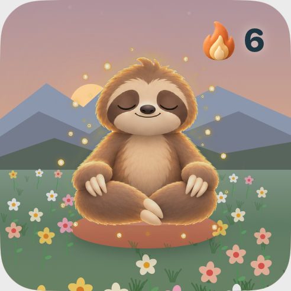
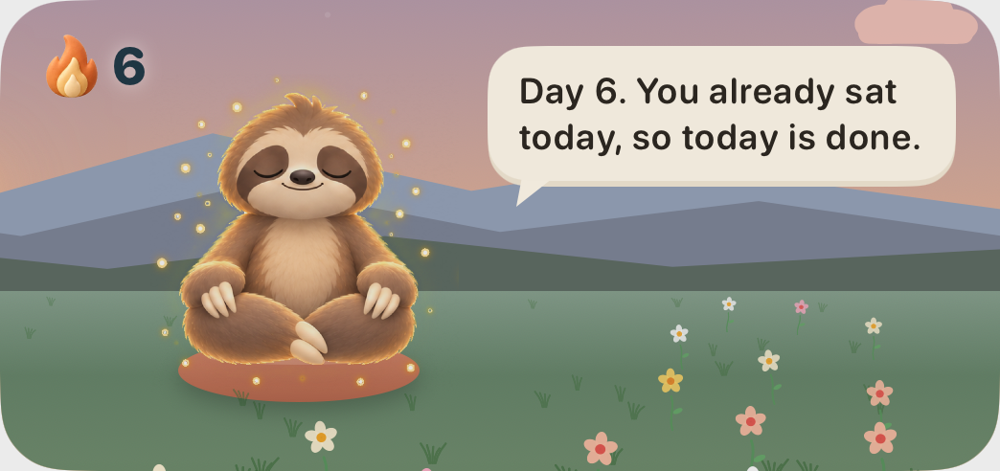
Night
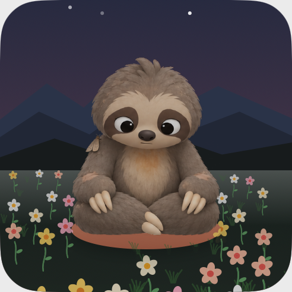
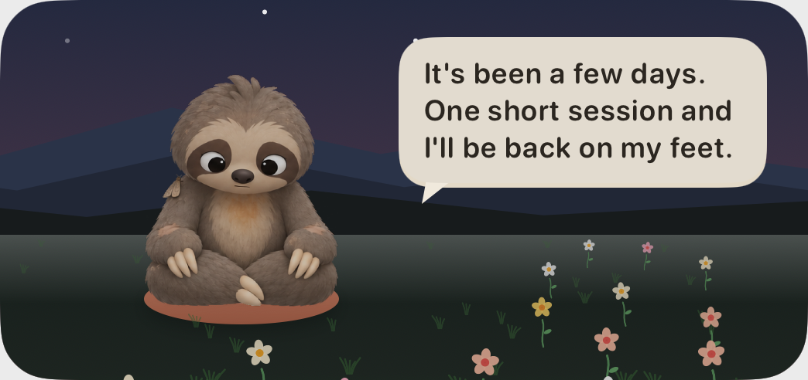
2. Otto up close
- One colour from the hour's sky, Otto big and cut off at the bottom edge, the streak as one big number. Duolingo's widget works this way.
- His face carries his mood; the medium adds his line.
- The simplest to build, and it holds up best when someone tints their home screen.
Morning
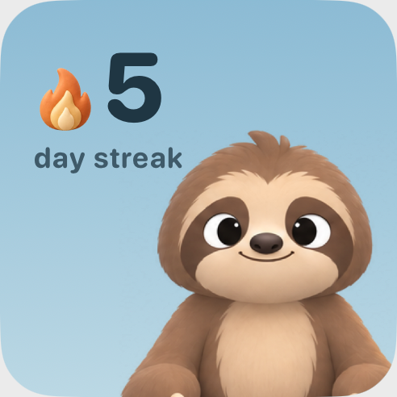
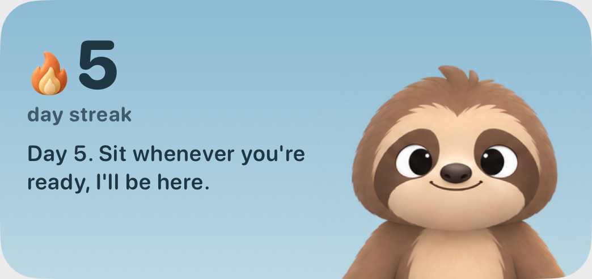
Evening
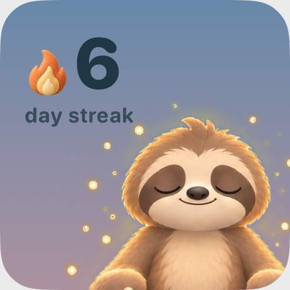
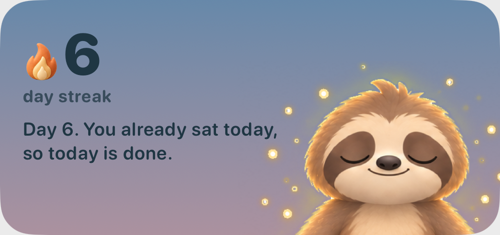
Night
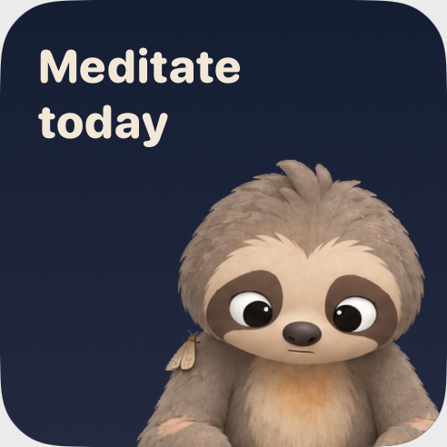
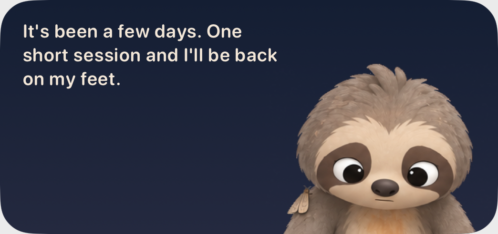
On a home screen
To decide
Which direction?The valley (1) or Otto up close (2).
The small valley's streak sits top right.Top left is where the morning sun is, so the flame landed on it. Home keeps its streak top left; the widget would differ.
Direction 2 with no streak.It says "Meditate today" for now. The other choice is to show only Otto and let his face say it.